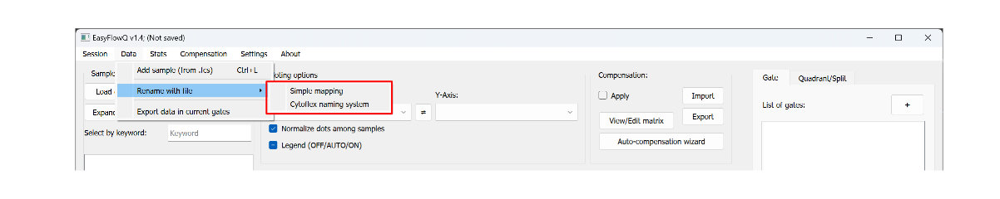

Batch-renaming with xlsx
Renaming samples from a high throughput experiment setup can be time consuming. EasyflowQ provides two methods to batch renaming samples names. Both methods provides a easy way for batch renaming your samples using a excel files (.xlsx). To access these tools, go to "Data" -> "Rename with file" (see below).

Regular rename
For basic renaming, create a excel file (.xlsx), with the old name in the first column
CytoFLEX format file names
The BECKMAN's CytoFLEX flow cytometer use a unique naming system when under the plate mode.